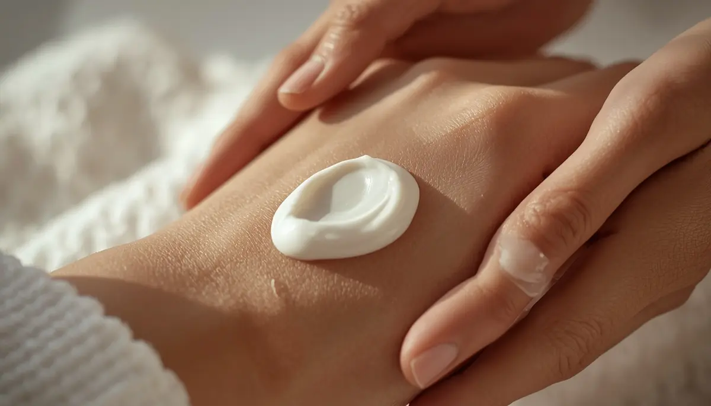

El arte de la hidratación y los emolientes
En el manejo cotidiano de la dermatitis atópica, la aplicación constante de cremas emolientes se erige como la herramienta terapéutica más potente y eficaz. Lejos de ser un simple cosmético de confort, el emoliente actúa como el sustituto artificial de ese cemento lipídico que la piel sensible no produce en cantidad suficiente. Aprender a utilizarlos con técnica y regularidad es la clave absoluta para espaciar los brotes y mantener la barrera cutánea protegida.
La regla de oro: el momento idóneo tras el baño
El instante más oportuno para aplicar el emoliente es justo después del baño, cuando la piel aún se encuentra ligeramente húmeda y con los poros abiertos. Al extender la crema en ese preciso momento, logramos "atrapar" las moléculas de agua en el interior de la epidermis, maximizando su capacidad de retención y sellando la barrera protectora antes de que se produzca la evaporación natural.
"La hidratación en la piel atópica no entiende de días libres; aplicar los emolientes con generosidad y constancia es el escudo diario que previene la inflamación."
Claves prácticas para elegir y aplicar los emolientes
Incorporar el hábito de la hidratación sin fricciones requiere tener en cuenta ciertas pautas sencillas en la rutina familiar:
1. Priorizar texturas untosas y libres de perfumes: Seleccionar cremas o pomadas densas específicas para pieles atópicas, evitando lociones ligeras con fragancias que puedan provocar reacciones de sensibilidad.
2. Extender con caricias suaves: Aplicar el producto siempre mediante movimientos amplios, circulares y suaves en la dirección del vello, evitando frotar enérgicamente para no estimular el picor.
Reconstruir la piel para recuperar la tranquilidad
Convertir el momento de la crema en un ritual de bienestar compartido ayuda a que el menor lo viva sin resistencia ni enfados. Con una hidratación rica y constante, la piel recupera su flexibilidad natural, devolviendo el descanso y la sonrisa a toda la familia.
➔ Volver al índice de Dermatitis atópica